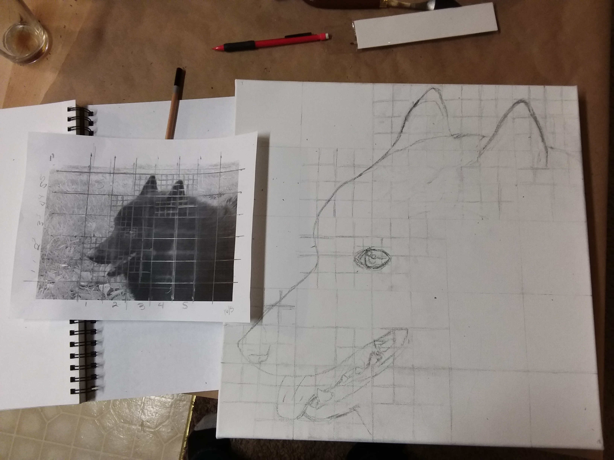
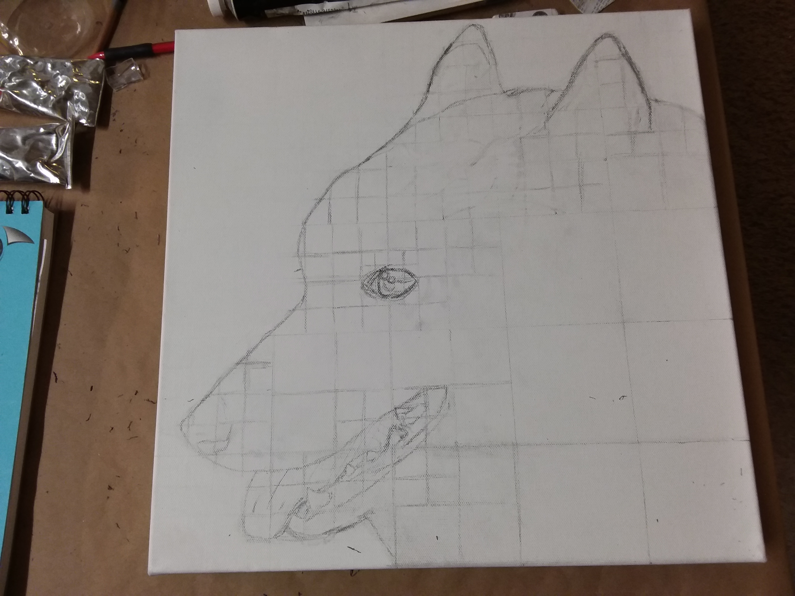
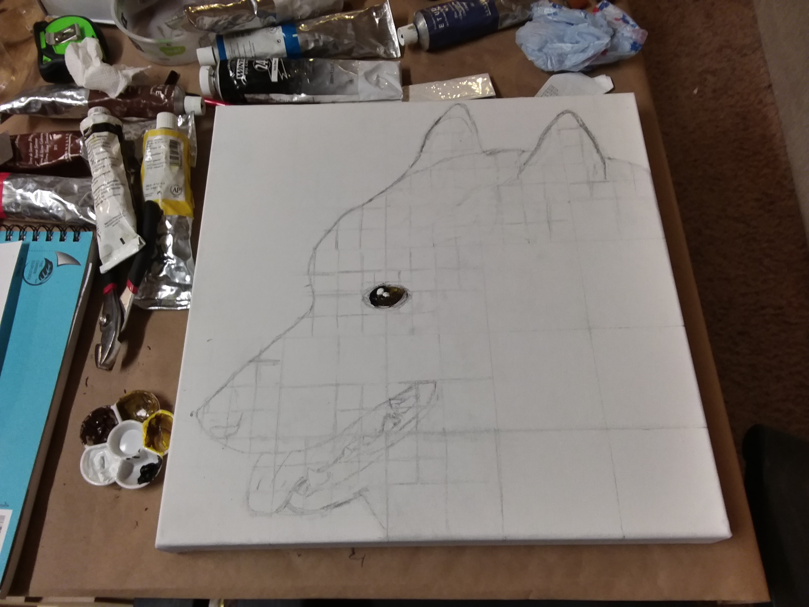
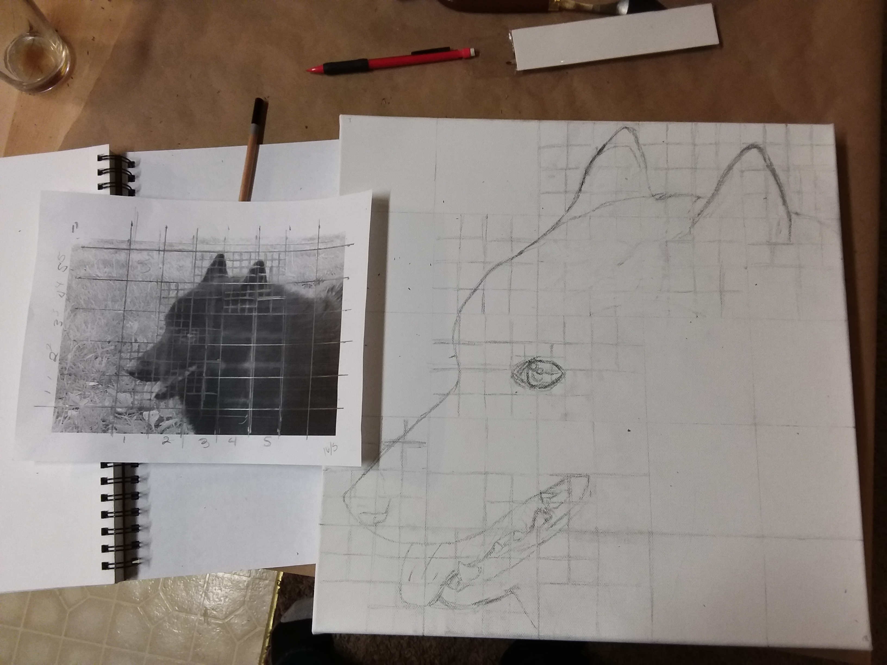
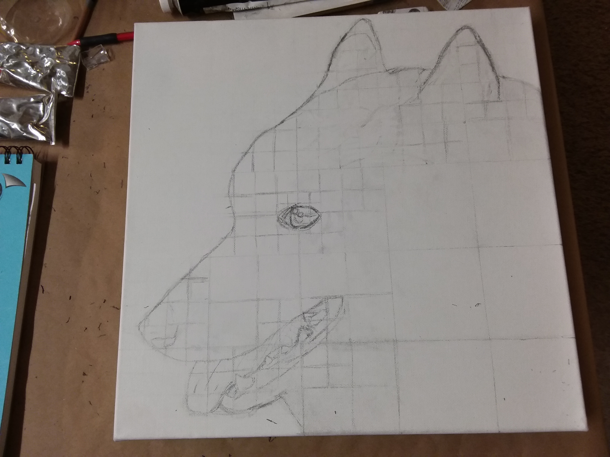
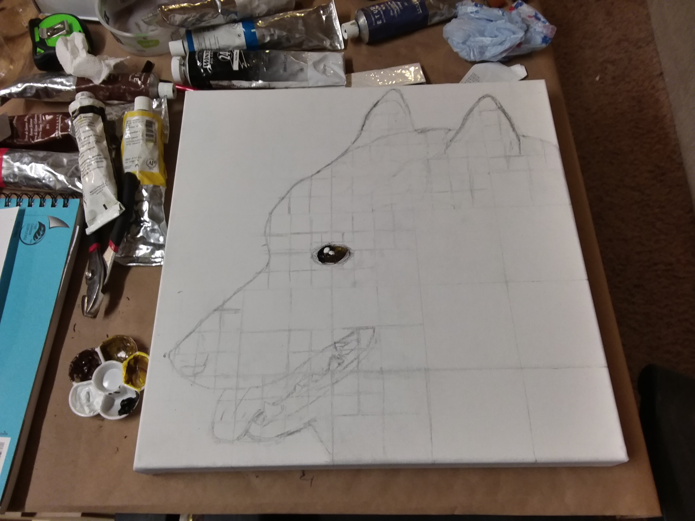

Aldrich
AldrichShortly before Thanksgiving 2016 my Dad's dog Punky (my childhood dog) came to the end of his life. Punky had been with me for some of the hardest times of my life and was my Dad's little buddy. With that in mind I knew my Dad would appreciate a painting of Punky and I tried my hand at oil paints and gave the resulting painting to my Dad for Christmas.
I’ve found that with any artwork that pertains to an individual animal proportions and expression is everything. I need the painting to be Punky not just a schipperke. With that in mind I began the process with a picture that I had taken previously and made a grid over the photo and the canvas. From there I can begin the painting process.
 




